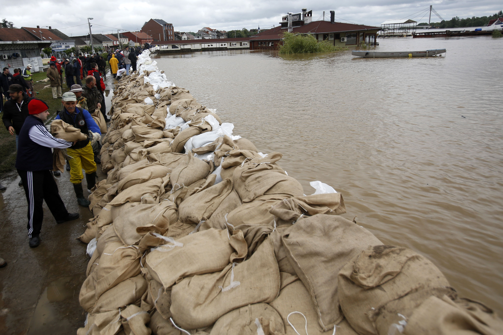

Toggle navigation
Use sandbags to levee the river
Levees are sandbags that soak up water and can help stop flooding and minimize the flooding. Place some levees around the river.

http://langstonbag.com/wp-content/uploads/2015/02/flood3.jpg
Go back to get another task